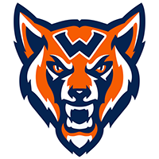
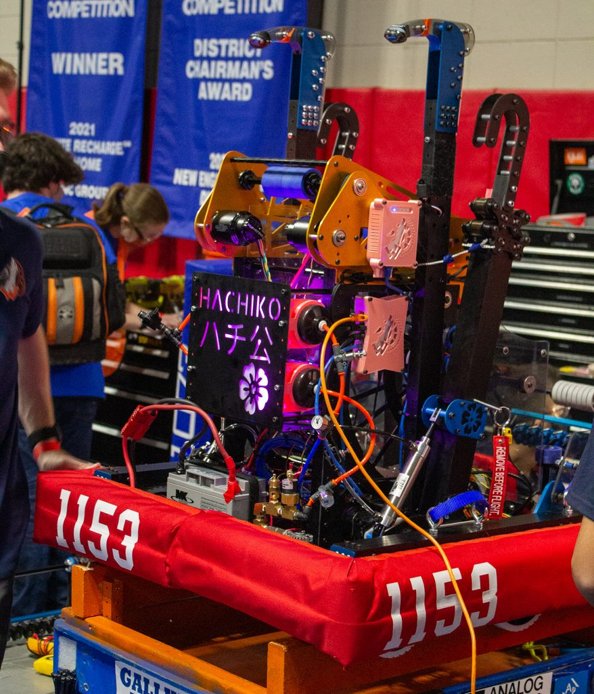
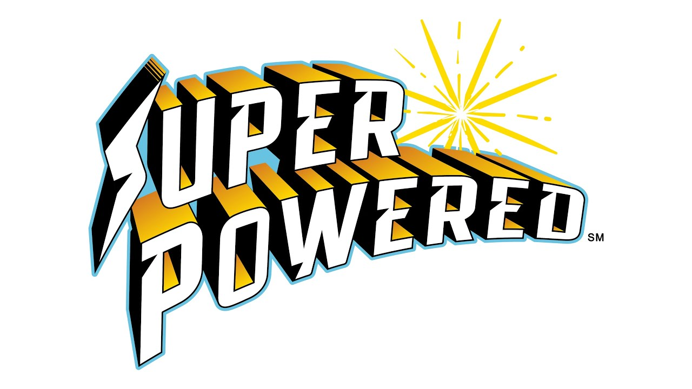
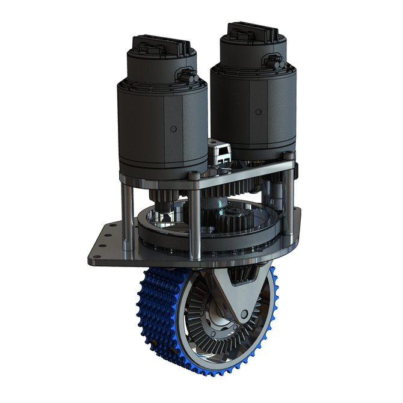

Timberwolf Robotics: Team 1153
Our 2022 Rapid React Robot!
This season was our best season ever where we made it to 11th place in our district at Worlds winning coutless awards on our way! We hope to keep up the hot streak and go even farther this year! Our team is ready to go and we hope to see you chearing us on from in the stands or in the livestreams!
First Lego League!

This Season Some Students on Team 1153 have started two FLL team in order to kickstart the intrest in engeneering in our community. The community aspect is very important to our tea to build the next generation of engineers and to hopefully inspire them to join our team or any robotics team to fuel their pation for engineering.
We plan to be able to compete in the 2023 season and to hopfully continue this program for years to come inspire as many people as we can to join engineering.
Swerve Drive!
During The off Season our team hs been working hard to build a Swerve Drive as seen above incase this next seaso benefits from using one! We plan to keep learning and prepairing for anyhing that might get thrown our way! Our whole team has been learning the engineering process in order to crate the best robot we can this build season and any future projects we may face.


Walpole High School - Web Design Class - Robert